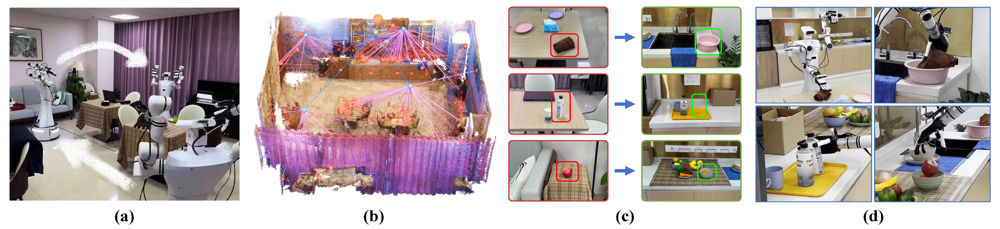
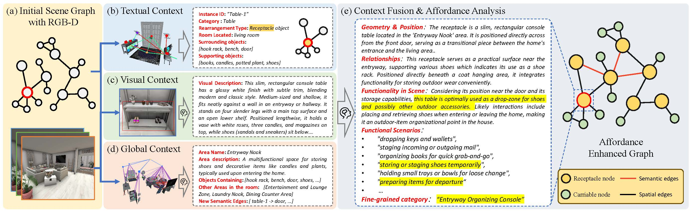
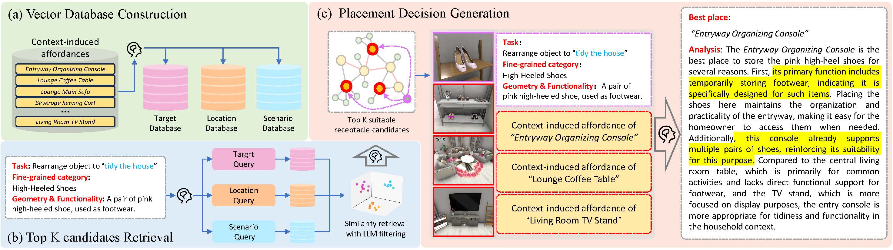
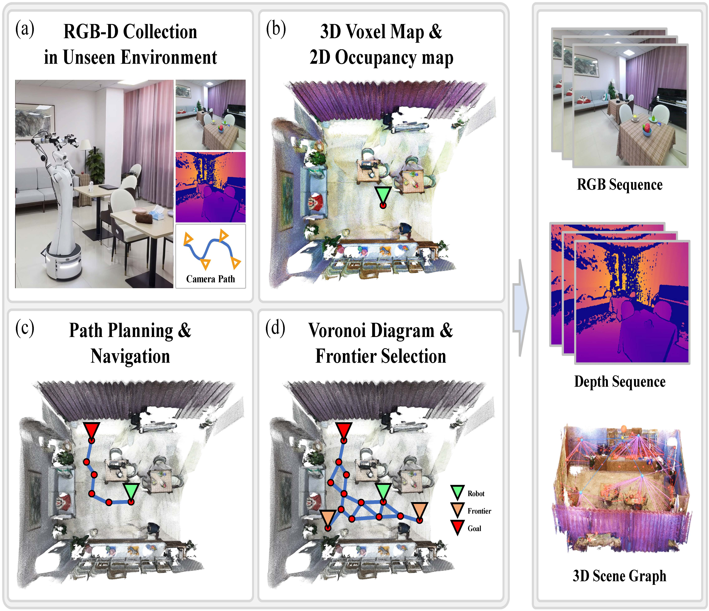
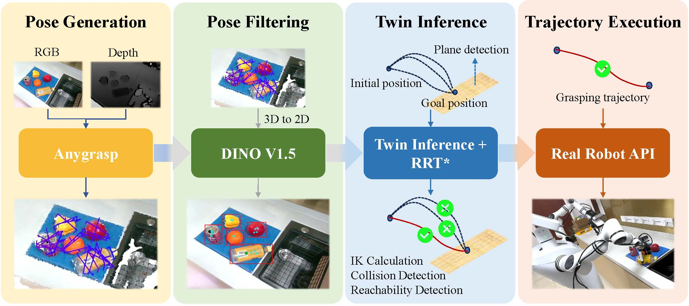

We present AEG-bot, a mobile humanoid robot system for end-to-end indoor scene rearrangement. Unlike simulation-based approaches that rely on strong assumptions such as full observability or simplified manipulation, AEG-bot is designed to function autonomously in complex, previously unseen real-world environments.
Household rearrangement requires a robot to detect misplaced objects and reason about their appropriate placements — a process that combines common-sense knowledge with user preference alignment. To enable such reasoning, we propose LLM-enhanced scene graph learning, which transforms an initial scene graph into an Affordance Enhanced Graph (AEG) with enriched object nodes and newly discovered contextual relations. In this representation, receptacle nodes are augmented with context-induced affordances that capture what kinds of objects can be placed, supporting effective task planning for rearrangement.
Building on this capability, AEG-bot unifies active exploration, RGB-D scene reconstruction, scene graph extraction, and autonomous task planning & execution into a single pipeline. With this design, the robot can perceive novel environments, identify misplaced objects, infer suitable placements, and carry out the rearrangement end-to-end—moving a step closer to practical and intelligent household robotics.

Upon entering an unknown environment, the robot executes active exploration and autonomously performs RGB-D reconstruction and extracts a scene graph (A). This graph is then transformed into an Affordance Enhanced Graph (AEG), where affordances and contextual relations are enriched (B). By leveraging the AEG together with selected RGB keyframes, a multi-modal foundation model is prompted to plan and execute the rearrangement task. With this framework, AEG-bot can detect misplaced objects, infer their proper placements (C), and autonomously complete the rearrangement, achieving robust and intelligent scene organization (D).
Beyond autonomous rearrangement, AEG-bot can also perform instructed task planning. By following natural-language instructions, the robot leverages its perception and reasoning capabilities to execute diverse household tasks. Specifically, it employs a retrieval-augmented generation (RAG) strategy to extract task-relevant nodes from the Affordance Enhanced Graph (AEG) and feeds them, together with scene context, into a multi-modal foundation model. The model then generates a sequence of high-level task steps, which are grounded into action primitives that the robot can execute to accomplish the instructed task.
Sort fruits into the black basket and bottles into the cartons
Help me get a milk and the delivery box on the table
Serve fruits to the plates on the dining table
Put every thing on the table into the basket
Play the piano
Serve me a bottle of water and put it on the table

We start from an initial scene graph constructed from an RGB-D sequence and perform context-induced affordance analysis through the following steps:

We adopt a multi-query retrieval-augmented approach for instructed task planning, enabling the robot to generate reliable placement decisions:

AEG-bot performs active exploration of unknown environments, leveraging RGB-D perception to reconstruct the scene. The navigation module plans efficient paths and ensures safe movement through cluttered household spaces, enabling the robot to autonomously reach target objects and regions of interest.

The grasping and placement module enables AEG-bot to interact physically with household objects. By integrating affordance-aware grasp detection and context-guided placement strategies, the robot can reliably pick up diverse objects and place them into appropriate receptacles, completing rearrangement tasks with precision and robustness.